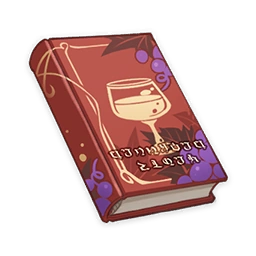

Mondstadt · Books & Literature
A Drunkard's Tale
A four-volume Mondstadt tale that nests a drunken wanderer’s meeting with a wolf around stories of the old wolf-king, the Seelie, and wine’s place in human and wolf life.

Overview and reading order
A Drunkard’s Tale is a four-volume Mondstadt book collection. The four volumes form a story within a story: a drunkard wanders into wolf territory, meets a lone wolf, and begins telling it a tale; the wolf then answers with two of its own. The framing is comic, but the stories inside it become increasingly old and mournful.
The collection is both a popular drinking tale and a source of imagery about the wolves, Seelie, and vanished places. Its narrator is unreliable in the ordinary way of a tavern storyteller: the book presents legends and nested dreams, so a striking detail should not automatically be read as a literal historical record.
Volumes I–II: the drunkard meets a wolf
A famous Mondstadt drinker stumbles into a forest inhabited by wolves after a night at the tavern. The story places his journey before the North Wind and the Wolf King have brought order to Wolvendom; the forest is described as dangerous, with rival packs fighting for survival. A lone wolf follows the intruder, at first treating him as prey and wondering at his strange behavior.
The drunkard eventually notices the wolf and offers to tell it a story. His breath and drunken behavior repeatedly disrupt the wolf’s attempt to hunt him, giving the opening volumes their slapstick tone. Rather than attacking, the wolf agrees to listen, and the book moves into the tale the drunkard tells.
Volume III: the wolf-king and the pale maiden
The drunkard’s tale follows an old wolf-king whose pack has scattered over a long journey through wastelands, ruins, and dangerous domains. Alone and hungry, the wolf finds an abandoned palace associated with the Seelie and hears a pale maiden playing a lute. Her song describes an exiled people and the last singers of the first Seelie; the wolf listens, and the two share the melody despite belonging to different kinds of life.
The scene links wolves and Seelie through music, memory, and loneliness. The story says the maiden’s song was once made for humans and is now used to mourn the Seelie’s fate. It does not name her or give a complete account of the palace’s fall. The wolf then asks whether the tale is over and begins telling one of its own.
Volume IV: the wolf tells the origin of wine
The wolf’s story reaches back to an age of ice and snow, when humans made an early wine from wild fruit to endure the cold. A negligent guard is credited in the tale with discovering brewing and becoming the first person to fall into a drunken dream. In that dream, he lives as a wolf and experiences the world through the pack’s struggles.
Wine brings humans and wolves together in dreams, but they respond to the experience differently. The human longs for the wolf’s freedom; the wolf distrusts the human’s desire and the confusing boundary between the two forms. The story ends with the wolves withdrawing from human settlements into wilderness and mountain forests, describing wine as an abyss from the wolves’ point of view.
Amsvartnir and the later story of Boreas
Echoes of a Forsaken Song, a World Quest at Lake Amsvartnir in Nod-Krai, opens access to ancient writing in the ruins of the Royal Court of the Seelie. In that writing, Koitar recounts how a wild beast came from the north, listened to her songs, learned human speech, called her Mother, and asked to travel south with its kin. She names the wolf Boreas, meaning North Wind.
That scene strongly echoes the solitary wolf’s meeting with the pale maiden in Volume III. The book itself never gives the wolf the name Boreas, and the quest’s ancient writing is a separate source. Other in-game records associate Boreas with Andrius, the Wolf of the North. Taken together, these sources make the relationship meaningful while leaving the collection’s nested folktale form intact.
Literary purpose and lore significance
The book shifts from comedy to elegy and back again. The drunkard’s clumsy behavior punctures the wolf’s grim tale, while the wolf’s account of old wine and dreams makes the opening encounter feel like a meeting between human culture and wilderness. Across the four volumes, the recurring ideas are exile, memory, companionship, and the different ways humans and wolves understand freedom.
The later Amsvartnir material gives the old tale new context, but readers should keep each source distinct: the collection tells the story as a tavern fable; Koitar’s ancient writing gives a first-person account of Boreas; and the wider game identifies the Wolf of the North through separate records. Interpretations beyond those connections remain theories unless another source confirms them.
Locations and collection reward
Volumes I and III can be found at Dawn Winery; Volumes II and IV are in the Knights of Favonius Library in Mondstadt. Collecting the full set grants the achievement The Drunkard and the Wolf, part of Mortal Travails: Series I.
The later parallel is found far from Mondstadt: complete Echoes of a Forsaken Song and inspect Ancient Handwriting I–III at the Royal Court of the Seelie above Amsvartnir, Nod-Krai. This source trail lets readers compare the fable with the later account directly.
This is an original CoreGG reading guide, not an official HoYoverse article or a reproduction of the game text. Source links below identify the records used so you can check the original context.
Sources & references
Check these sources for the original game text and reference trail.